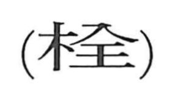

栓

Kun: | On: sen
stopper ・ plug ・ peg ・ faucet ・ tap
Explanation
A phono-semantic character: 木 marks the material and function (a wooden implement), while 全 serves as the phonetic, giving the on reading sen. Early glossaries describe it as a nail or a wooden nail; 丁 depicts the head of such a nail. The graph thus evokes a peg-like stopper driven into the mouth of a small-necked vessel to seal it. A version with a fluke or hook is written with the element 今, and related ancient forms show a wine jar 酉 capped with 今 to picture a lidded vessel—imagery that reinforces the idea of a plug securing a container. In modern usage it appears in words like 給水栓 (water faucet) and 消火栓 (fire hydrant).